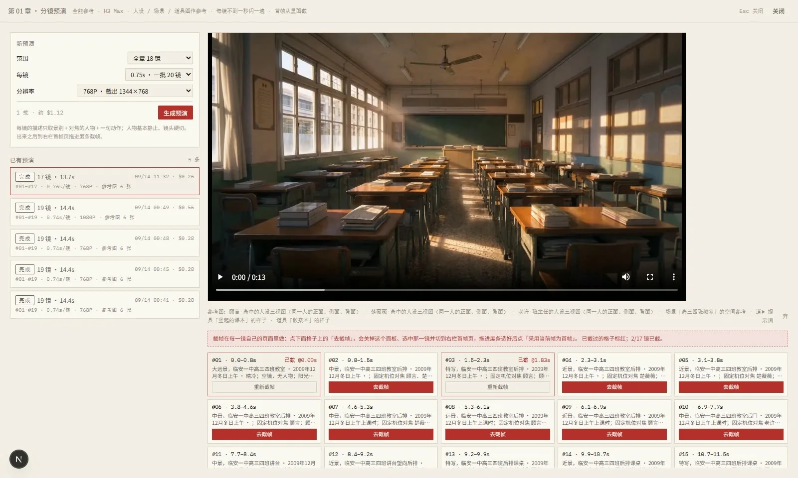
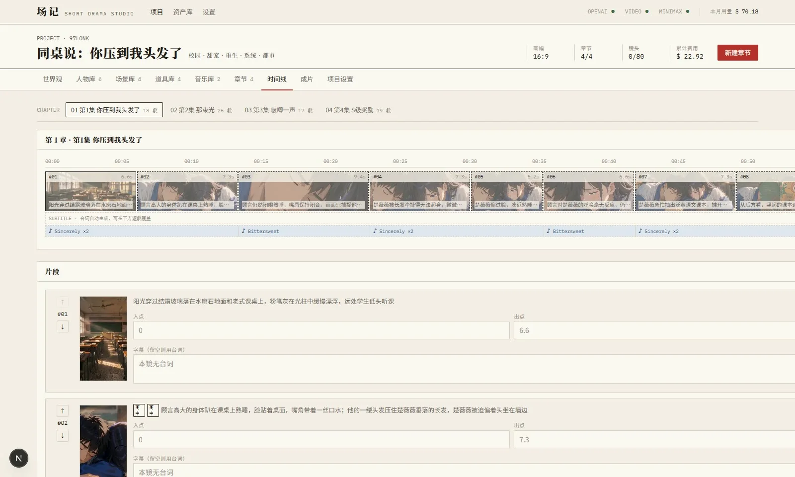

01 · Problem镜头越多，输入和版本越难追
把图片模型画的首帧交给视频模型，人物外观可能在两步之间发生变化。镜头反复生成后，哪一版用了哪些人物、场景和关键帧，也容易记不清。更长的制作链还要处理台词、时间线、字幕和导出。
我以镜头为中心组织这些环节：先整理人物三视图、场景和道具，再用视频模型预演，人工截取首帧，继续生成正式镜头。预演截帧是为了减少跨模型的视觉漂移；它不能保证所有镜头完全一致。
02 · How it works从章节走到可交付的片段
拆镜 agent 先给出镜头和台词，我逐镜检查景别、运镜、提示词及参考资产，然后预演、截帧、出片、对齐字幕与导出。
- 拆解章节生成分镜组、镜头与台词
- 整理资产确认人物、场景和道具
- 预演截帧拖动视频选取首帧
- 生成镜头MiniMax H3 出片并比较版本
- 对齐字幕Whisper 字级时间戳对应台词
- 导出成片拼接、字幕、音乐与片尾
03 · Features让每次重做都有来处
- 关键帧与分段可以指定尾帧与中间关键帧，分段生成后用 ffmpeg 拼接；预览和任务端共用切段函数。
- 版本与血缘每次生成保留可播放、比较、采用或弃用的版本，并记录输入指纹，标出上游变化后的过期产物。
- 人物与场景库人物按人设阶段留版本，三视图、场景正反打和道具图供镜头复用。
- 字幕检查Whisper 给出台词的字级时间戳，同时保留识别文本，便于检查念错的内容。
- 时间线导出ffmpeg 负责镜头拼接、裁切、转场、ASS 字幕、背景音乐和片尾字卡。
- 说书模式章节拆成画面与旁白；角色音色先试听确认，再配音，复用版本和时间线流程。
04 · Architecture单机任务队列与媒体处理
项目使用 TypeScript、Next.js 15、React 19、Prisma 和 SQLite。页面通过 Server Actions 进入服务层，进程内队列执行生成与导出任务。provider 层连接 fal.ai、OpenAI 兼容中转站和 MiniMax，本地媒体处理交给 ffmpeg。
预演默认使用 MiniMax H3，图像模型主要用于人物、场景和道具等资产。单进程与 SQLite 便于在一台机器上部署；目前的公开资料不足以说明分布式并发能力。界面里的成本是估价，实际扣费以供应商为准。
05 · Decisions围绕镜头做三项选择
从视频预演中取首帧
图片模型仍用于生成资产，首帧优先从视频模型的预演结果里人工挑选，让后续镜头沿用更接近出片的视觉起点。
把生成记录留成版本
重做不直接覆盖上一版。每个产物保留输入指纹和采用状态，上游改动后可以判断哪些镜头需要复查。
配音先让人确认
说书模式先给角色与旁白提供音色候选，人工试听确认后才允许配音，避免整章生成后才发现音色不合适。
06 · Milestones公开提交中的节点
- 首个公开版本以“场记”发布短剧工作台，随后补充 README 与截图。
- 改名为墨影 · Inkreel同日加入中英双语展示页。
- 说书与对话框加入说书流程和 galgame 式立绘、名牌与逐字字幕。
- 交接说明仓库补充 AGENTS.md，记录当前实现、前端约定和待办。
统计日期 2026-09-28：默认分支 10 次提交、1 star、1 fork。未发现 GitHub Release。
07 · Screens从分镜到导出

